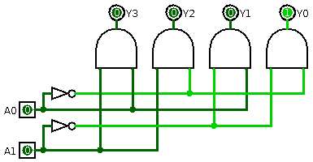
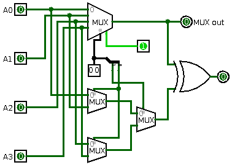
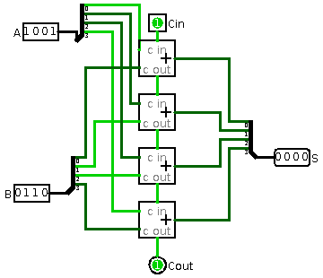
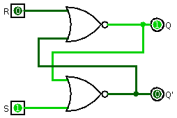
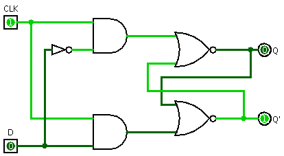
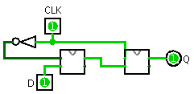
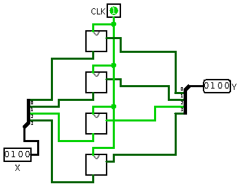
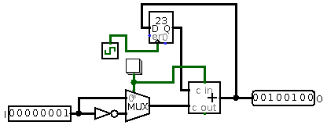

Laboration 4, Logic Gates
Table of Contents
1 Decoder
1.1

Figure 1: Decoder
1.2
Genom att testa de olika inputs på A1 respektive A0 verifierar jag utdata. Om A0 och A1 har 0 som indata bör därför Y0 vara den enda som har ett som utdata.
2 Multiplexer
2.1
- MUX utdata är blå för att den "bär" på en bit det är just nu inget som bestämmer vad det ska vara.
- Utdata signalen "Equal" är röd eftersom det är något fel. Det kan antingen vara, som i det här fallet, att den inte får någon indata eller den får olika signaler från flera grindar.
- Select signalen är svart i det här fallet eftersom den har ett flerbitsvärde. Antingen är någon eller alla bits opsecificerade.
2.2
 Efersom vi kan undersöka om de båda konstruktionerna av multiplexarna kan ge samma värde så kan vi helt enkelt undersöka om både ger samma utdata.
3 Adder
3.1

Figure 2: Full adder.
3.2

Figure 3: 4-bit ripple-carry adder
4 Latches
4.1
 Eftersom det är ett minne beror det helt på vad Q och Q' hade från början. R indata kan beskrivas som "reset" och S som "set".
4.2

Figure 4: D latch.
- När både CLK och D är 0 händer ingenting (förutsatt att de inte hade något värde från början). När sedan CLK sätts till 1 blir den ena AND grinden 1 och den andra 0, beroende på värdet av D. Q och Q' ändras inte om CLK ändras. CLK bestämmer bara när Q och Q' ska ändras.
- När CLK är 1 och D sätts till 1 ändras Q till 1 och Q' till 0.
- Fördelen med en D latch är att vi kan bestämma när vi vill ändra värdet på Q och Q'. Detta blir ett problem i SR latchen eftersom S och R både står för när vi ändrar och vad vi ändrar.
- Problemet med D latchen är att Q och Q' bara ändras när vi bestämmer det. Dvs, det kan bli konflikter med tajmingen och input samt output inte blir samma.
5 D Flip-Flops and Registers
5.1 D flip-flop
5.1.1 5.1.1

Figure 5: D Flip-Flop using two D latches.
5.1.2 5.1.2
Värdet av Q ändras på klockans "rising-edge". Dvs, när D ändras påverkas bara Q när CLK sätts till 1. Annars bibehåller den bara state.
5.2

Figure 6: 4-bit register
6 Design of a Synchronous Sequential Circuit.
6.1
6.1.1 6.1.1

Figure 7: Synchronous Sequential Circuit.
6.1.2 6.1.2
Alla "Synchronous Sequential Circuit" måste innehålla ett register samt att de ska vara kopplade till samma klocka. Dessutom måste varje cykel passera ett register. I denna lab skulle bara 5.1 och 5.2 vara en "Synchronous Sequential Circuit" eftersom de just måste innehålla ett register. En D latch i sig är ett register så uppfyller den därmed kravet.